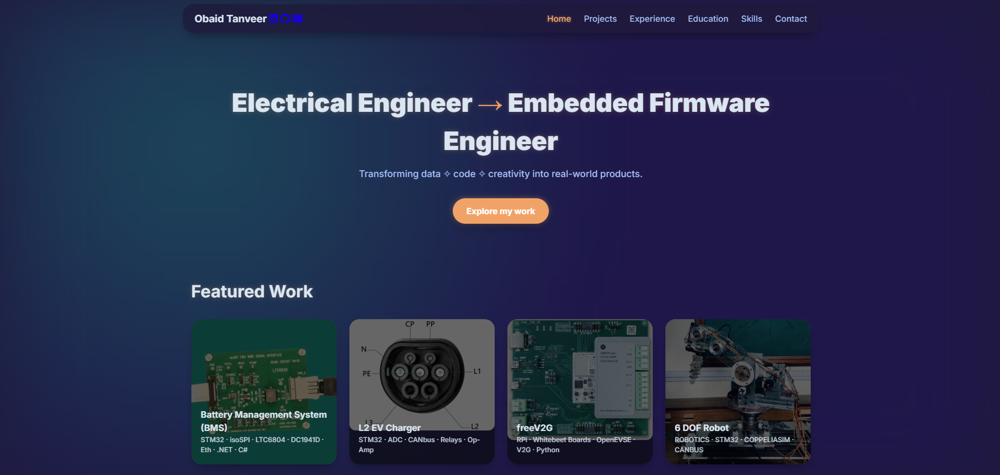
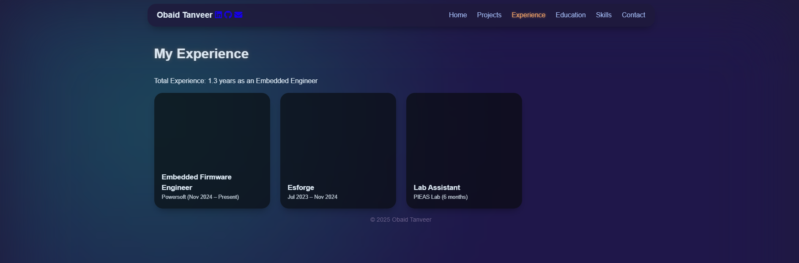

Portfolio Website (This website)
View Code ↗I created this Portfolio Website as a personal project to showcase my skills, projects, and journey as an Electrical Engineer and Embedded Firmware Engineer. This website, which you’re exploring right now, is a dynamic and responsive platform designed to highlight my work in embedded systems, robotics, and EV charging solutions. Built from the ground up, it’s an open site, freely accessible and usable by anyone interested in learning from or contributing to my projects. I’ve included screenshots to give you a glimpse of its design and functionality, reflecting my growth in web development and design.
Project Overview
The Portfolio Website serves as a digital resume and project gallery, featuring sections for my projects, experience, education, skills, and contact information. I developed it using HTML for structure, CSS for styling with a glassmorphism effect, and JavaScript for interactivity, such as the tilt effect on project cards. Hosted on GitHub Pages, it’s a live representation of my technical abilities and a testament to my self-directed learning in web development. The site is designed to be mobile-friendly and visually appealing, with a focus on showcasing my embedded systems projects effectively.
This project was a labor of love, evolving over time as I added new features and refined its design. It’s open to the public, and I encourage others to use it as a reference or fork it for their own portfolios, reflecting my commitment to sharing knowledge.
Development Process
I started this website with a basic HTML structure, gradually adding CSS to create a modern look with a glassmorphism background and smooth transitions. I used the Inter font from Google Fonts for readability and Font Awesome for icons, enhancing the user experience. JavaScript was integrated to add the Vanilla Tilt.js library, giving project cards a 3D tilt effect on hover, which adds an engaging touch.
The development involved several key steps:
- Planning: Sketched the layout, deciding on a single-page design with a navigation bar, hero section, and project grid.
- Coding: Wrote semantic HTML, styled with CSS variables for consistency, and added JavaScript for dynamic behavior.
- Testing: Tested responsiveness across devices (desktop, tablet, mobile) using browser developer tools, ensuring compatibility.
- Deployment: Pushed the code to a GitHub repository and enabled GitHub Pages for hosting, learning the deployment process along the way.
I iterated on the design based on feedback, adding a footer with a dynamic year update and optimizing load times by using CDN-hosted libraries.
Screenshots
Here are a couple of screenshots showcasing the website’s design and functionality:
This screenshot shows the main page, featuring the hero section and project grid, highlighting the glassmorphism effect and tilt animation on the project cards.
This screenshot captures the experience page, showcasing the responsive layout and navigation bar, providing a view of my professional background.
These images reflect the website’s clean design and user-friendly interface, which I crafted to make my portfolio accessible and engaging.
What I Learned
Building this website was a significant learning experience that expanded my skill set beyond embedded systems. Here’s what I gained:
- Web Development Basics: Mastered HTML, CSS, and JavaScript, understanding how to structure, style, and add interactivity to a site.
- Responsive Design: Learned to use CSS media queries and flexible layouts to ensure the site works on all screen sizes.
- Version Control: Gained hands-on experience with Git and GitHub, including commits, branches, and deployment via GitHub Pages.
- Performance Optimization: Discovered the importance of minimizing load times by leveraging CDNs for libraries like Font Awesome and Vanilla Tilt.js.
- User Experience (UX): Explored UX principles, focusing on intuitive navigation and visual appeal to engage visitors.
- Problem-Solving: Troubleshot issues like CSS conflicts and JavaScript errors, improving my debugging skills.
This project taught me the value of cross-disciplinary skills, blending my engineering background with web development to create a professional online presence. I also learned to embrace open-source principles, making the site available for others to learn from or adapt.
Technical Features
- Responsive single-page design using HTML, CSS, and JavaScript.
- Glassmorphism effect and tilt animation for an interactive user interface.
- Inter font and Font Awesome icons for a polished look.
- Vanilla Tilt.js for 3D hover effects on project cards.
- GitHub Pages hosting for easy deployment and updates.
- Dynamic footer with a current year update via JavaScript.
- Open-source availability for public use and contribution.
This Portfolio Website project, completed as of June 02, 2025, is more than just a showcase—it’s a reflection of my growth as an engineer and developer. By making it an open site, I hope to inspire others and build a community around my work. The skills I’ve gained in web development complement my embedded systems expertise, opening new avenues for future projects. I’m proud of this creation and excited to continue refining it as my career evolves!